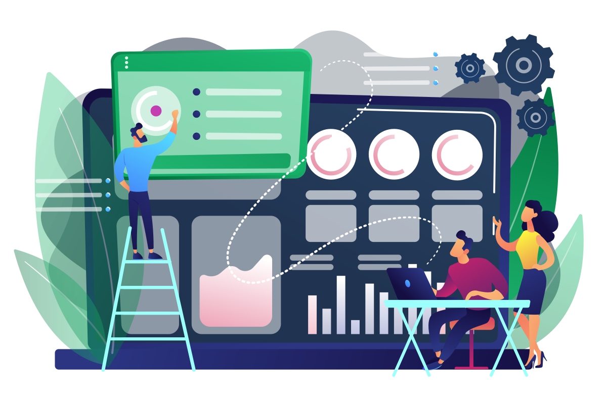
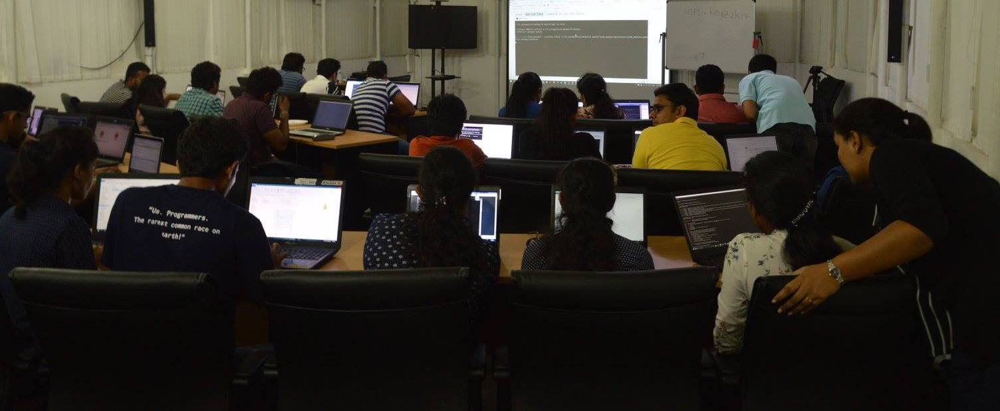
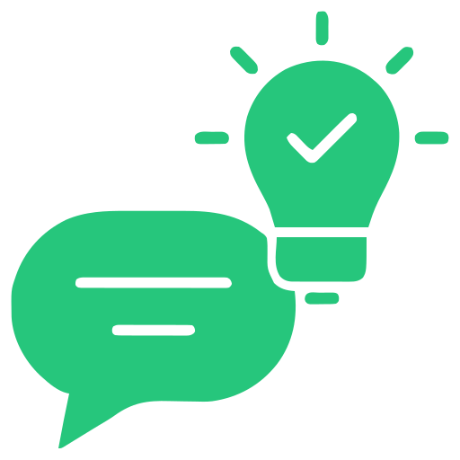
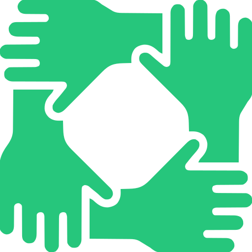

Enhancing Yourself,
Your Process &
Your Product
Empowering Quality, Driving Excellence in Sri Lanka's tech community.
Empowering Quality, Driving Excellence in Sri Lanka's tech community.

We are bunch of enthusiasts looking to improve the quality of software products and processes! We organize meetups, sessions and do consultation to all your quality related activities.


Established in 2017 with a few individuals who wanted to improve the awareness of the quality engineering community in Sri Lanka.
We started by introducing hands-on training sessions for the quality community through Code Camps.
Throughout the years we have organized many events which helped to improve the technical knowledge of the QA community in Sri Lanka.
We organize community based meetups and sessions for the quality enthusiasts.

We conduct consultations on various quality engineering aspects.

We conduct various bootcamps to kick start your quality engineering journey.
Join hundreds of quality engineering enthusiasts in Sri Lanka. Attend our events, learn from industry experts, and grow your career in QA.
Find answers to commonly asked questions about CQC and our activities.
No questions found matching your search.